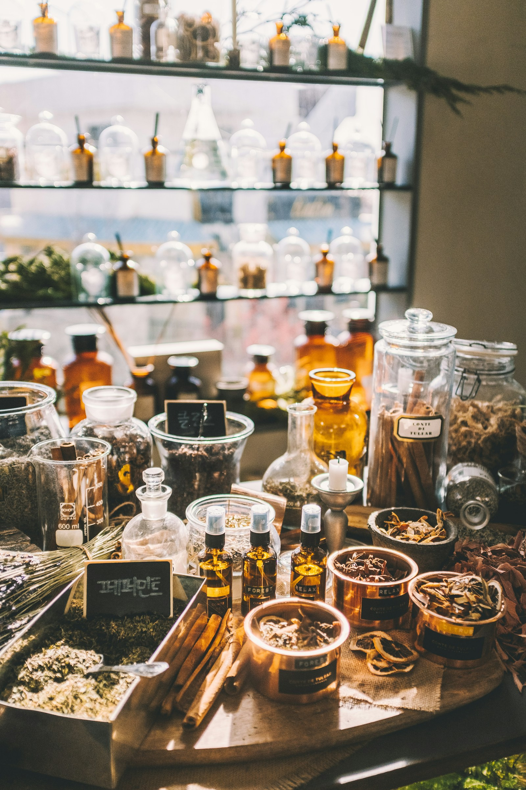

홈 > 한의원 소개
한의원 소개
내면의 불편감, 외면의 아름다움까지 살피는 공간
삶에 어떤 파도가 몰아쳐도,
함께라면 이겨낼 수 있도록
파도한의원은 중노년층 환자분들이 일상에서 느끼는 불편감을 가까이에서 살피고, 겉으로 드러나는 모습까지 함께 돌보는 것을 지향합니다.
[원장님 인사말 · 콘셉트 상세 문구 입력 필요]
INSIDE & OUTSIDE
내면의 불편감, 외면의 아름다움
내면의 불편감
통증, 갱년기 증상, 불면처럼 몸속에서 느끼는 불편함을 살핍니다.
외면의 아름다움
얼굴 라인, 피부, 체형 등 겉으로 드러나는 모습의 균형을 살핍니다.
DIFFERENCE
파도한의원의 진료 방식


차별점 1
복진·맥진·설진 등 한의학적 진단과 의료기기를 함께 활용합니다.
차별점 2
[입력 필요]